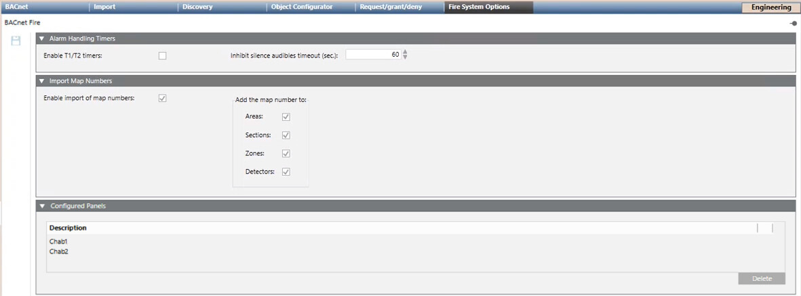

BACnet Network Fire Options
The Fire Options tab of the BACnet network contains configuration options as applicable to the fire panels integrated in Desigo CC.
The tab includes three expanders that are generally described here. For detailed configuration instructions, search for the workflow of the fire panel you are interested in, for example Configuring <fire panel name>, and then refer to the Configure BACnet Fire Network step.
Alarm Handling Timers
In this expander, the Enable T1/T2 Timers (Alarm verification t1 and t2 timers in the AVC - Alarm Verification Concept while configuring the panel) check box allows you to enable the alarm-handling countdown display on the user interface when a relevant fire event is presented. Depending on the applied regulations, you may be able to set the Inhibit silence audibles timeout (sec.) duration.

This inhibit silence audibles timeout must be the same for each PMI of the FS20 network for both silence and reset inhibit timeout. The same timeout must be used also for the management station.
Import Map Numbers
Here you can Enable import of map numbers from the fire panel configuration file, and set the objects (Areas, Sections, Zones, and Detectors) whose description will include the map number.
Configured Panels
This expander provides the list of imported fire panels with the goal of supporting their individual deletion from the BACnet network. Select the panel you want to remove and click Delete.
